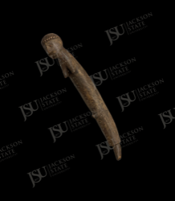

African Art Record
Curved Horn or Tusk-Form Implement with Figural Head
Unidentified West or Central African peoples
This curved horn- or tusk-form implement has a small carved human head at one end and a long tapering body. The material may be horn, ivory, bone, or carved wood, and the form suggests a handle, prestige implement, ceremonial object, or decorative carving. The pairing of figural head and curved body creates a distinctive sculptural object.
Collection Context
Catalog framing
This record is published as part of the Jackson State University African Art Collection and remains distinct from the Department of Art permanent collection browse path.
Low: broad West/Central African attribution is possible, but material, culture, and function require physical examination or provenance.
Object Description
Interpretive description
This curved horn- or tusk-form implement has a small carved human head at one end and a long tapering body. The material may be horn, ivory, bone, or carved wood, and the form suggests a handle, prestige implement, ceremonial object, or decorative carving. The pairing of figural head and curved body creates a distinctive sculptural object.